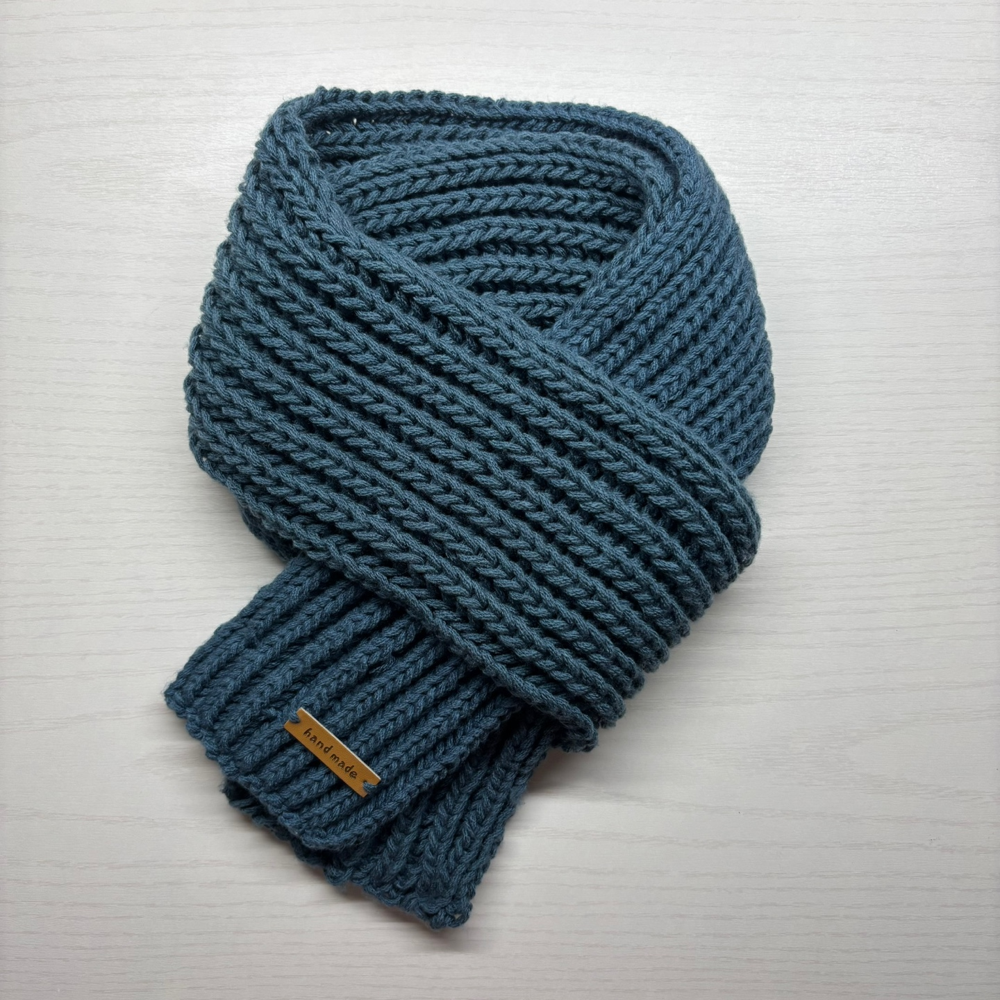
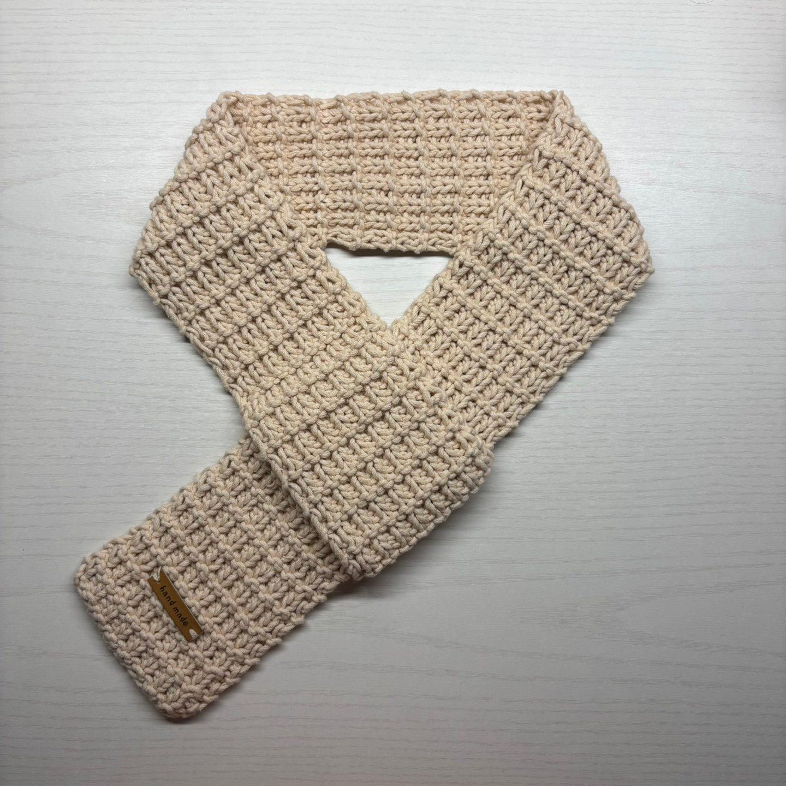
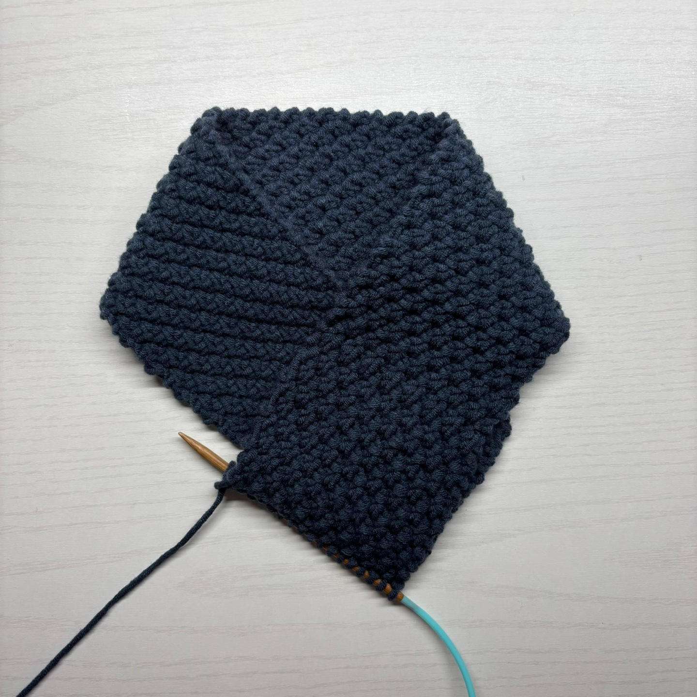

1.데님 변형고무뜨기 목도리

뜨개기법: 변형고무뜨기
변형 고무뜨기는 오른쪽 바늘에 실이 걸린 상태로 안뜨기 방향으로 실을 옮긴 후 다음의 두개 코를 한번에 겉뜨기하는 방식이다.
여기서 꼭 알아야 하는 점은 변형 고무뜨기의 전체 코는 3의 배수여야 한다는 것이다.
첫코는 1개만 두번째코는 2개 코를 동시에 뜨는 행위가 한번의 변형 고무뜨기가 되기 때문이다.
변형고무뜨기는 뜨기가 매우 수월해서 빨리 뜰 수 있는 데다가,
편물이 도톰하게 떠져서 공기층이 많아 보온효과가 뛰어나다는 장점이 있다.
이로 인해 뜨개질에 갓 입문한 일명 '뜨린이'들에게 가장 많이 추천되는 기법이기도 하다.
참고 영상
클릭하여 뜨개실 구매 사이트로 이동
2. 아이보리 와플 목도리

뜨개기법: 와플 뜨기
와플뜨기는 4개의 과정을 반복한다.
우선 첫 번째 단은 겉뜨기를 한다. 그 다음 두 번째 단은 첫 코를 걸러 뜬 후 나머지 코는 모두 겉뜨기를 하는 가터뜨기이다.
3,4단은 첫 코를 걸러뜬 후 겉뜨기와 안뜨기를 반복하는 1코 고무뜨기이다.
이 4가지를 한 세트로 여러 번 반복해주면 목도리가 완성된다.
와플목도리는 겉뜨기, 안뜨기만 안다면 뜰 수 있는 초보자용 목도리이다.
무늬가 독특하고 재미있어서 핸드메이드의 매력을 물씬 느낄 수 있다.
남녀노소 모두에게 어울리는 올록볼록한 예쁜 무늬여서 선물로도 제격이다.
참고 영상
뜨개실: 브랜드얀 밀키코튼블루 면혼방 뜨개실 - 피넛
클릭하여 뜨개실 구매 사이트로 이동
3. 챠콜 멍석무늬 목도리

뜨개기법: 2단 멍석뜨기
2단 멍석뜨기 또한 겉뜨기와 안뜨기를 알면 어렵지 않게 만들 수 있다..
1, 2단은 겉뜨기와 안뜨기를 반복한다. 그리고 3, 4단은 안뜨기와 겉뜨기를 앞과 반대 순서로 반복하여 뜬다.
이 네 가지 과정을 한 세트로 계속 반복하면 목도리가 완성된다.
대바늘 2단 멍석뜨기 스티치는 차분하고 고급스러운 무늬라 남녀노소 모두 호불호가 갈리지 않는 무늬이다.
덕분에 선물용으로도 매우 추천하고싶다.
또한 너음목도리로 만들면 시간을 비교적 적게 투자하고도 완성도 있는 목도리를 얻을 수 있다.
참고 영상
뜨개실: 니뜨 모드케이크실 - 챠콜
클릭하여 뜨개실 구매 사이트로 이동
4. 아이보리 사각 티코스터

뜨개기법: 가터뜨기, 메리야스뜨기
이 티코스터는 가터뜨기와 메리야스뜨기를 활용하여 만든다.
우선 첫 4단은 겉뜨기를 반복하는 가터뜨기만을 사용한다. 그 다음 5단부터는 메리야스뜨기가 기반이지만, 조금 복잡해질 수 있다.
메리야스뜨기가 무엇인지 설명하자면, 겉뜨기 한 단과 안뜨기 한 단을 반복하여 뜨는 것이다.
그런데 이 티코스터를 만들 때는 양 끝의 3~4코는 무조건 겉뜨기로만 떠야한다. 테두리를 만들기 위해서이다.
이렇게 약 18단을 뜬 후에는 다시 가터뜨기 4단으로 마무리한다.
이 티코스터는 테두리가 있어 깔끔하게 정돈되어 보인다는 점이 매력적이다.
만약 중간 과정이 어렵고 헷갈린다고 느껴진다면 단수링을 사용하여 쉽게 만들 수 있다.
앞서 나온 목도리들과 달리 시간이 훨씬 적게 걸리기 때문에 뜨개질에 가볍게 입문해보고 싶은 사람들에게 추천한다.
참고 영상
뜨개실: 브랜드얀 밀키코튼블루 면혼방 뜨개실 - 피넛
클릭하여 뜨개실 구매 사이트로 이동